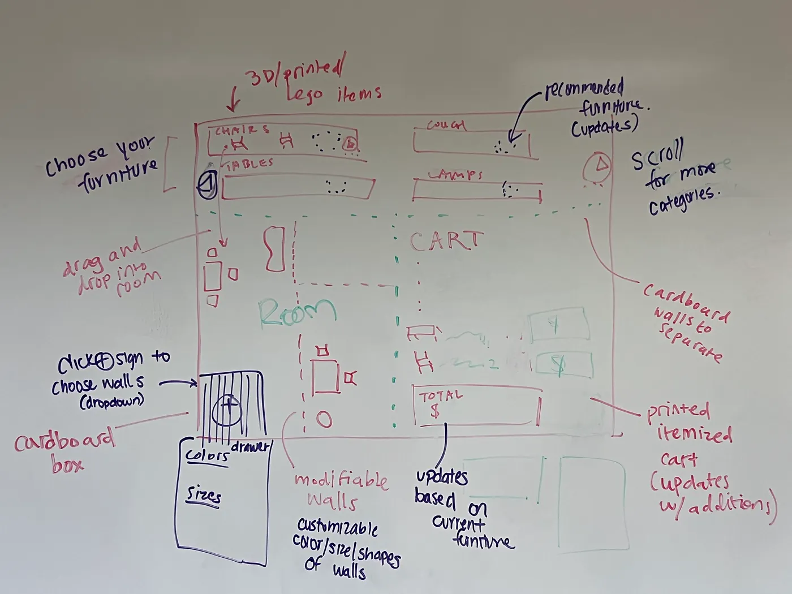

Sprint 4: Re-design and Extend
View Full Post Here Introduction
For Design Sprint #4, our team was tasked with extending a previous digital concept into a physical prototype. We chose to build on our earlier work from Design for Dimensions, where we explored how users might design and shop for furniture in a way that feels visually immersive, emotionally engaging, and spatially intuitive.
Preliminary Work
Collecting Feedback
As part of our preparation for Design Sprint #4, we revisited our earlier digital prototypes and actively sought feedback from peers. This process helped us identify both strengths and areas for improvement, guiding the direction of our physical prototyping. Below, we’ve summarized each individual team’s feedback from the past prototypes.
Tanaka’s Prototype Feedback
From this set of past designs, we synthesized all past feedback we’ve received. Our evaluation emphasized the importance of stronger contrasting and accent colors to break up the monotonous black-and-white palette that had begun to dominate our design. Also, our past feedback noted that the selected map graphic felt visually disconnected from the rest of the interface, suggesting a need for tighter integration of visual elements.
Kyle’s Prototype Feedback
Based on the past prototypes, we received this feedback. Their critique focused on layout and functionality. They suggested filling the space below the logo with a search filter to make extended displays more useful. They also recommended adding a window to show what is currently in the cart, rather than relying on a hidden or extended cart button. Finally, they questioned the redundancy of an extended display kiosk, noting that in-person shopping should not require accessing another store interface.
Ellora & Chetna’s Prototype Feedback
Based on our own reflections, and the peer input we received on our past designs, we chose to expand on ideas we had already generated, such as the carousel for browsing items and the potential use of AI-generated media to enrich the design experience. designs
Overall Feedback Collection
After reviewing our past designs, we conducted a small round of evaluations with 2–3 people outside of class. To keep the process consistent, we oriented participants for two minutes and then guided them through scenario-based tasks.
Questions we asked:
- What tasks would you expect to accomplish with this specific screen size?
- How would you navigate the interface if not all buttons were clickable?
- How would you check financing or track payments?
- What role could a large screen play in this shopping experience?
- What kind of questions do we want to ask/how can we standardize the evaluation?
For each screen size we had some ideas for more specific questions:
- Watch scenario: How would you check your financing?
- Laptop: How could you get to financing page, how would you shop for a particular? Check the status of thefinancing page? You bought a sofa using installments, how would you check how much money you have left to pay?
- Large screen: How would you intuitively navigate the screen in general? What would you use a large screen for in this context?
Below is the feedback we received, synthesized:
Watch
- Financing is something good to include in the watch.
- No back button, but users were able to figure it out.
- Should be a shop option, at least to browse through things.
- Profile section includes settings: unclear what it does.
- Minimalist design praised; GUI felt easy to navigate and intuitive.
Desktop
- Carousel on the shop had no actual shopping page.
- Input bar for mailing list + gift card felt too blown up and jarring.
- Two separate stores were clear and well received.
- Financing sections looked too bare — needed more structure.
- Left textboxes should have a different background color.
- Contact info should use a different font to stand out.
- Financing testimonials took too much space — better as a carousel.
- Homepage carousel items should be clickable to shop.
- Shopping page needed — users wanted category search.
- Financing chart might work better centered.
Large Screen
- Could be used for advertising; could be placed anywhere on campus.
- Carousel auto-changes images — users wanted control.
- Hours info should be visible at the bottom without scrolling.
- Interactivity stood out and was well liked.
- Users suggested adding furniture placement tools and a 3D room builder.
- Browsing the full selection would be valuable.
- Hover-over effects were helpful.
- Dimensions and pricing at a glance were appreciated.